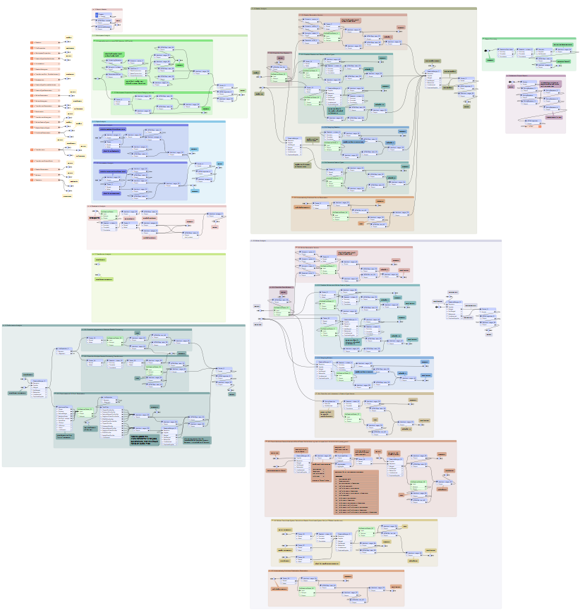
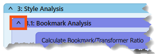
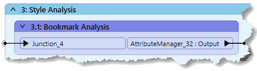
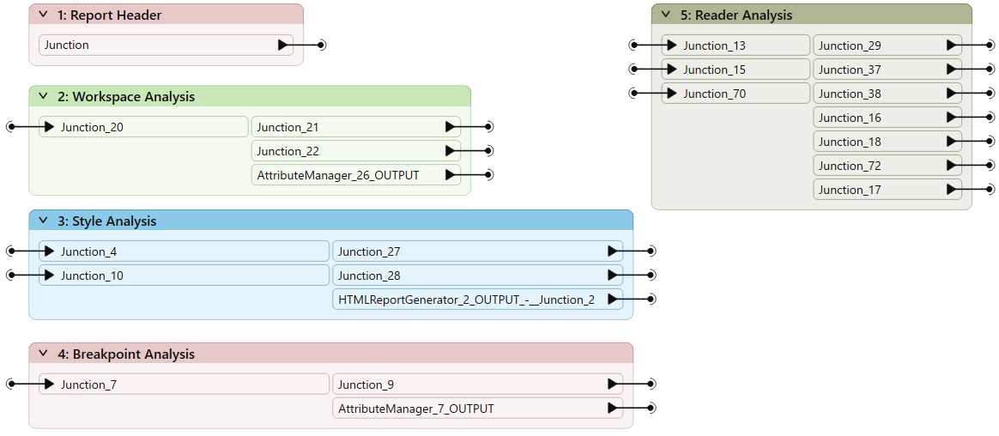
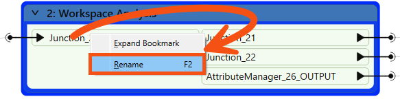
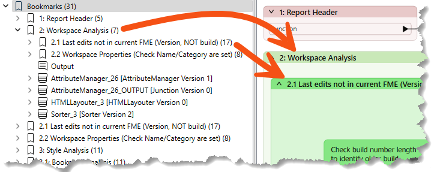
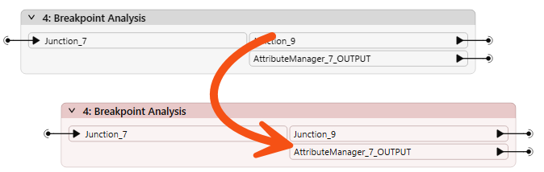
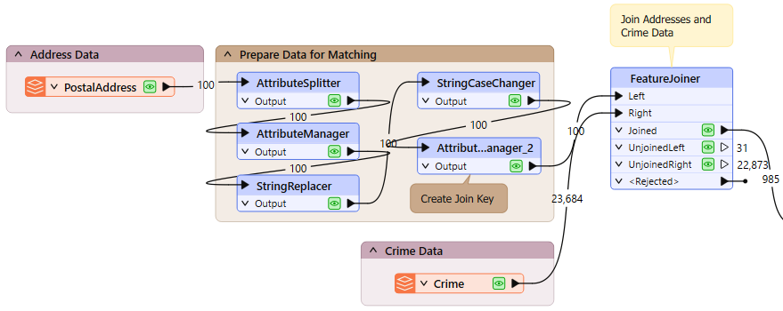
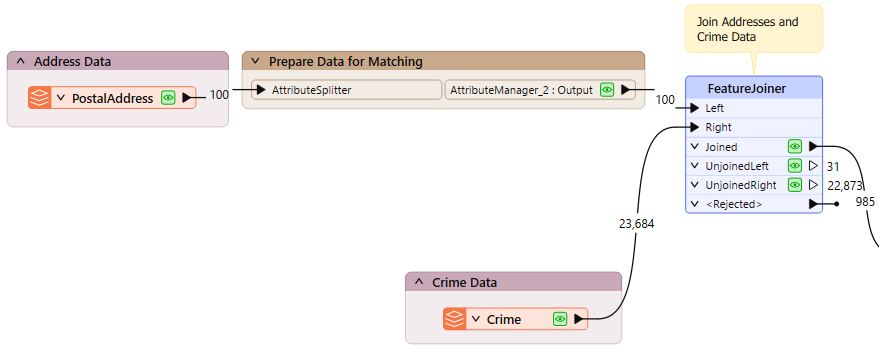
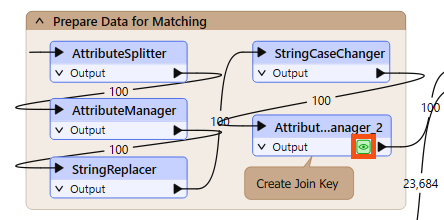

Learning Objectives
After completing this lesson, you’ll be able to:
- Use bookmarks to plan workspace design.
- Use bookmarks to navigate and edit your workspace quickly.
- Use bookmarks to improve workspace performance.
Instructions
In this lesson, you will:
- Optional: Watch the Improve Workspaces with Bookmarks video.
- Scroll down to read the text below.
- Optional: Let us know if you found this lesson relevant to your role by filling out the survey at the bottom of the page.
- Click 'Next' to mark the lesson complete.
Resources
- Starting workspace
- C:\FMEData\Workspaces\UseDataIntegrationBestPractices\improve-workspaces-with-bookmarks.fmw
- Complete workspace
- C:\FMEData\Workspaces\UseDataIntegrationBestPractices\improve-workspaces-with-bookmarks-complete.fmw
- Addresses.gdb.zip (File GDB)
- C:\FMEData\Data\Addresses\Addresses.gdb
- Crime.csv
- C:\FMEData\Data\Emergency\Crime.csv
- Parks.zip (MapInfo TAB)
- C:\FMEData\Data\Parks\Parks.tab
Improve Workspaces with Bookmarks
Bookmarks play an essential role in a well-styled workspace for many reasons, including these:
- Design: As a way to subdivide a workspace and manage those sections
- Access: As a marker for quick access to a specific area of a workspace
- Editing: As a means to move groups of transformers at a time
- Performance: As a means to improve workspace performance when caching data
Bookmarks for Design
A bookmark is a great way of indicating that a particular section of a workspace is for a specific purpose. Subdividing a workspace this way often makes the layout more straightforward to follow.
As one user has put it, bookmarks are like paragraphs for your workspace!

The above workspace illustrates how to mark up different workspace sections using bookmarks. As you can see, subdividing bookmarks further by nesting one bookmark inside another is permitted.
Collapsible Bookmarks
You can click the small icon in the top-left corner of a bookmark to collapse it:

Collapsing a bookmark means it is compressed down to the size of a single transformer, displaying none of the contents except for where data enters or exits the bookmark:

Clicking the icon a second time re-opens the bookmark to its previous size.
This functionality allows you to render large workspace sections in a much smaller area and only open them when editing is required.
For example, the section of the workspace displayed above might become this:

Re-opening a collapsed bookmark adjusts the workspace's layout, moving other transformers or bookmarks out of the way without overlap. Re-closing the bookmark causes the opposite to occur.
For example, if you expand bookmark three (Style) in the above screenshot, then bookmarks four and five move to one side to accommodate it. When you collapse bookmark three again, the reverse occurs to give the same compact layout as before.
You can rename the input and output ports on collapsed bookmarks to help clarify the data entering and exiting:

You can do this by double-clicking the object, pressing F2, or using the Rename option on the context menu.
Bookmarks for Quick Access
The Workbench Navigator window lists all bookmarks. Each bookmark appears in order, and you can expand it to view its contents. It may include feature types, transformers, or nested bookmarks:

Clicking or double-clicking a bookmark in the Navigator selects it and brings it into view. Bookmarks both visually divide a workspace into sections and let you jump to different parts of that workspace.
In this way, bookmarks are like the chapter headings in a book!
Besides being a way to access bookmarks quickly, you can use the bookmarks in the Navigator to present your workspace. By clicking the first bookmark and then using the arrow keys on your keyboard, you can flip from bookmark to bookmark using animation in a way that would be very useful when showing the workspace as part of a presentation.
The order of bookmarks in that window is alphabetical, which may differ from the order in which you wish to present a workspace.
In that case, you can rename your bookmarks using a numbering system to force them into the correct order, e.g., 1.1, 1.2, 2.1, 2.2, etc.
Bookmarks can then be dragged up and down in the Navigator window to give the correct order. Expand a bookmark to include nested bookmarks in your tour.
Bookmarks for Editing
Bookmarks define a section of the workspace containing several objects. When editing a workspace without bookmarks, you can move objects by selecting the object or objects and dragging them to a new position.
However, when bookmarks divide a workspace, you can move objects by dragging the bookmark to a new position. When an object is inside the bookmark, it moves as the bookmark does.

Using this technique, you can move large groups of objects around the workspace canvas to create a better layout. Objects inside a bookmark will move whether the bookmark is collapsed or expanded.

Remember that one of the bookmark properties is labeled Contents and has the value "Move with Bookmark" or "Move Independently." The former allows you to move objects with the transformer; the latter causes objects to remain in position when you move a bookmark.
When a workspace is run with Data Caching turned on, records are cached at every transformer. As you can imagine, in larger workspaces, this leads to a lot of data being cached, sometimes unnecessarily:

Notice in the above screenshot that every transformer in the Prepare Data for Matching bookmark is being cached.
However, when a bookmark is collapsed, then caching only occurs on the bookmark output objects:

This feature means that data is cached only for the final transformer in the bookmark, saving considerable time and resources:

You want to avoid putting a workspace into production when caching is turned on, regardless of whether your bookmarks are collapsed. This technique is only recommended in workspace creation's design, authoring, and testing phases.
Leave Us Feedback on This Lesson